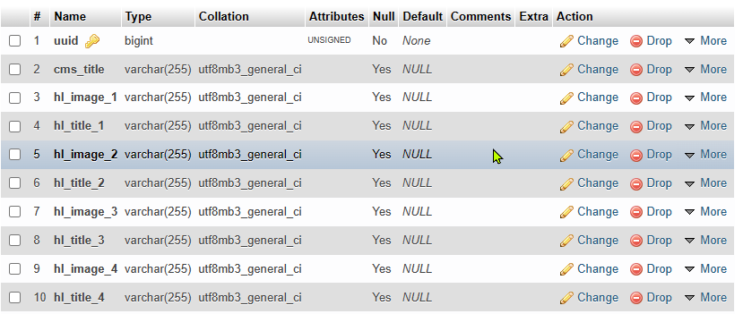
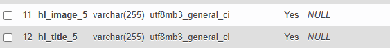
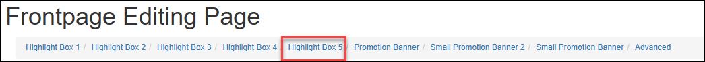
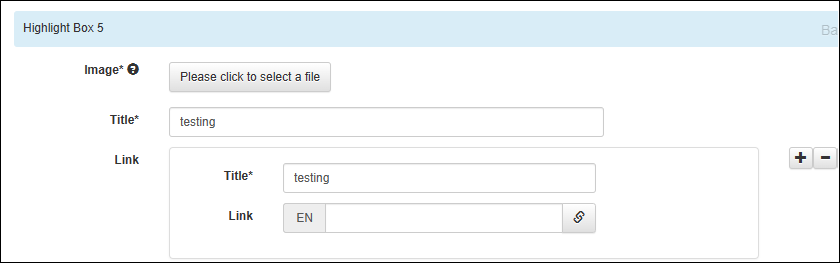
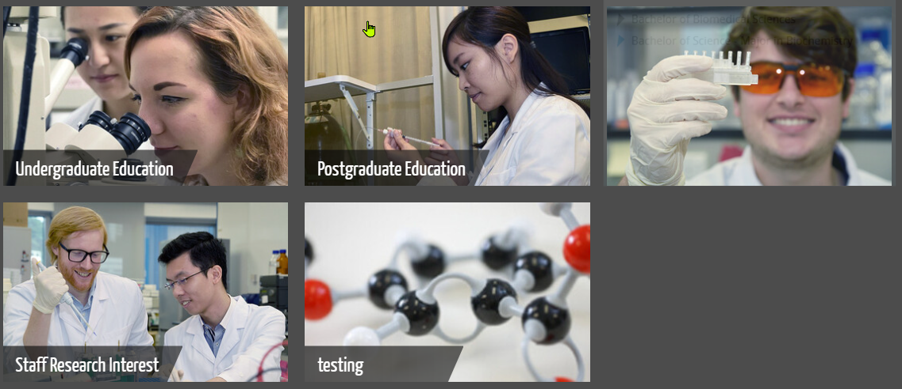

School Web
Require HKU portal login for admin page (www.sbms.hku.hk/admin)
edit /html/theorigo/application/views/admin/cms_user/login.php
Problem
Cannot see images in the admin page
Answer
Need to install ImageMagik:
How to add additional sections e.g. blog?
CREATE TABLE new_table LIKE original_table;
cp modules/news/controllers/News.php modules/blog/controllers/News.php cp modules/news/controllers/Event.php modules/blog/controllers/Blog.php Edit
cp modules/news/controllers/admin/Event.php modules/blog/controllers/admin/Blog.php Edit
cp modules/news/entity/event.php modules/blog/entity/blog.php Edit
cp modules/news/entity/event.yaml modules/blog/entity/blog.yaml Edit
cp modules/news/views/news_detail.twig modules/blog/views/news_detail.twig cp modules/news/views/news_index.twig modules/blog/views/news_index.twig
/home/sbms/www.sbms.hku.hk/html/theorigo/application/modules/news/controllers/Blog.php /home/sbms/www.sbms.hku.hk/html/theorigo/application/modules/news/controllers/admin/Blog.php /home/sbms/www.sbms.hku.hk/html/theorigo/application/modules/news/entity/blog.php /home/sbms/www.sbms.hku.hk/html/theorigo/application/modules/news/entityblog.yaml
edit: /home/sbms/www.sbms.hku.hk/html/theorigo/application/config/routes.php
$route['(blog)(/.*)?'] = "news/$1/router$2";
add: $route['admin/(blog)(/.)?'] = 'blog/admin/$1$2'; $route['(blog)(/.)?'] = "blog/$1/router$2";
Means:
How to add additional highlighted items?
Original: 4 highlighted items in 1 row:
New: 5 highlighted items in 1 row
Answer
-
Edit structure of mysql table: frontpage_data:

-
Add columns hl_image_5 and hl_title_5:
ALTER TABLE frontpage_data ADD hl_image_5 varchar(255) NULL AFTER hl_title_4, ADD hl_title_5 varchar(255) NULL AFTER hl_image_5; -
Result:

-
-
Edit html/theorigo/application/modules/main/controllers/Main.php
Under
* change:public function filter_frontpage($item){* to:for($i=1; $i<=4; $i++){ $this->to_href_target($item['hl_link_'.$i], 'link'); $this->to_src_alt_2x($item, $oid, 'hl_image_'.$i, 'hl_title_'.$i, $size['hl']); }for($i=1; $i<=5; $i++){ $this->to_href_target($item['hl_link_'.$i], 'link'); $this->to_src_alt_2x($item, $oid, 'hl_image_'.$i, 'hl_title_'.$i, $size['hl']); } -
Edit html/theorigo/application/modules/main/entity/frontpage.php
- Add the following after section_hl_4
'section_hl_5' => array ( 'caption' => 'Highlight Box 5', 'type' => 'section', ), 'hl_image_5' => array ( 'caption' => 'Image', 'type' => 'file', 'resize' => '363c229', 'require' => true, 'dimension' => array ( 0 => 726, 1 => 458, ), ), 'hl_title_5' => array ( 'caption' => 'Title', 'type' => 'text', 'hidden' => false, 'require' => true, ), 'hl_link_5' => array ( 'caption' => 'Link', 'type' => 'group', 'multiple' => true, 'children' => array ( 'title' => array ( 'caption' => 'Title', 'type' => 'text', 'require' => true, ), 'link' => array ( 'caption' => 'Link', 'type' => 'link', 'entity' => '{"page":"Page", "staff":"Staff", "news":"News", "event":"Event"}', ), ), ), -
Edit html/theorigo/application/modules/main/entity/frontpage.yaml
- Add the following after section_hl_4
section_hl_5: caption: Highlight Box 4 type: section hl_image_5: caption: Image type: file resize: "363c229" require: true dimension: [ 726, 458 ] hl_title_5: caption: Title type: text hidden: false require: true hl_link_5: caption: Link type: group multiple: true children: title: caption: Title type: text require: true link: caption: Link type: link entity: '{"page":"Page", "staff":"Staff", "news":"News", "event":"Event"}' - Result:
Highlight box 5 created:


- Add the following after section_hl_4
-
Edit html/theorigo/application/modules/main/views/index.twig.
- Change:
{% for j in range(1, 4) %} <div class="card__item card-main__item" tabindex="0"> <figure class="card__item-fig card-main__item-fig"> - To:
{% for j in range(1, 5) %} <div class="card__item card-main__item" tabindex="0"> <figure class="card__item-fig card-main__item-fig">
- Change:
- Edit html/writables/min/css/projectbase.css
@media screen and (max-width: 767px) .card-main__item { width: 100%; margin: 0 0 25px; } @media (max-width: 991px) .card-main__item { width: calc((100% - 60px)/3); /* change from /2 to /3 */ margin: 5px; /* change from 15px to 5px */ } @media (max-width: 1599px) .card-main__item { width: calc((100% - 63px)/5); /* change from /4 to /5 */ margin-right: 15px; /* change from 21px to 15px */ } .card-main__item { position: relative; z-index: 1001; width: calc((100% - 90px)/5); /* change from /4 to /5 */ margin: 0 15px 0 0; /* change from 30px to 15px */ }
How to reduce the font size for text within the highlighted items?
Alternative: arrange highlights in two rows:
